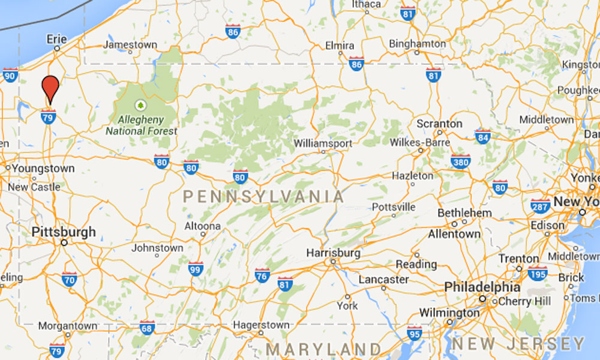
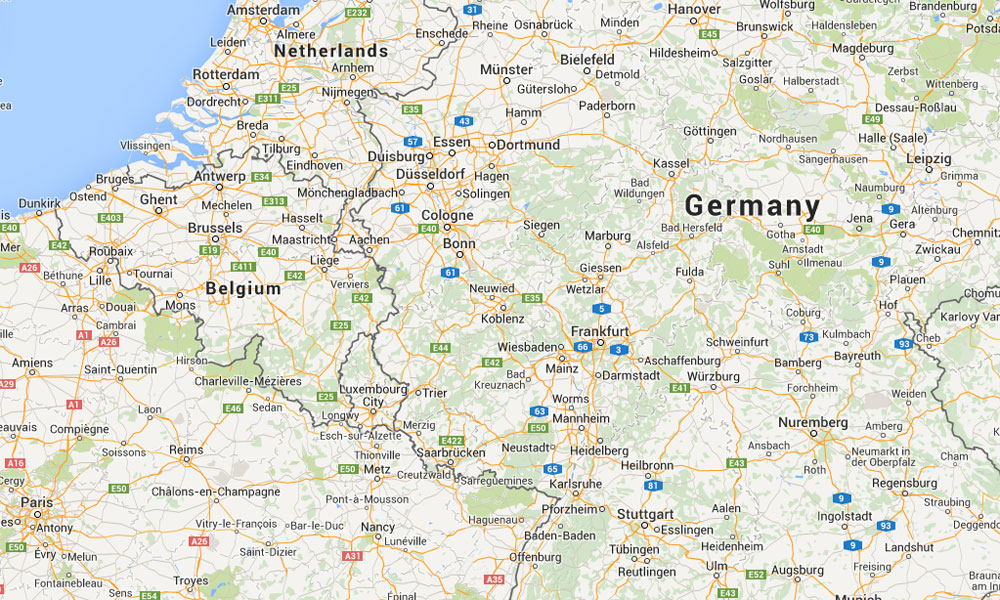
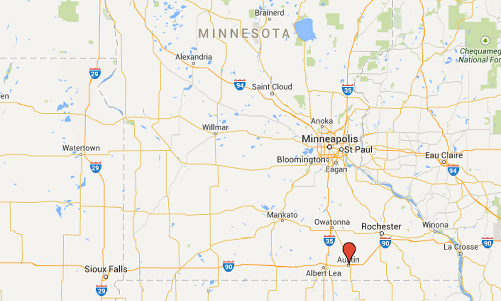
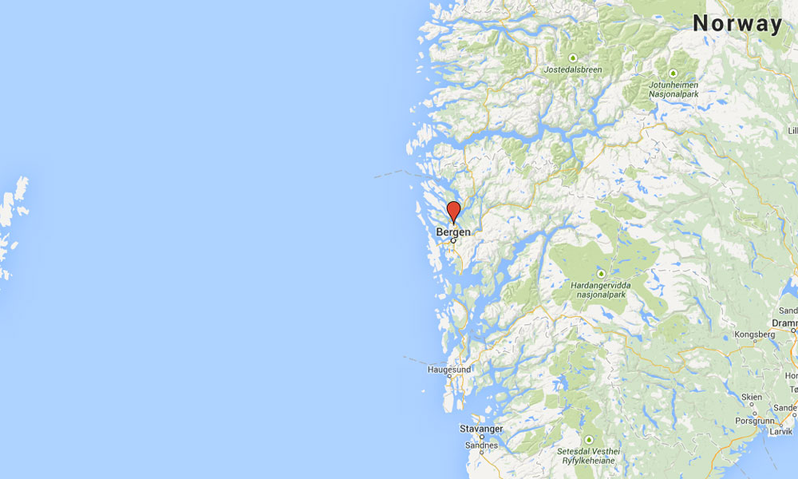

Meet my grandparents
Norma Knutson
Don Knutson

Meadville, Pennsylvania
Hometown of Grandma Knutson

Germany
Home Country of Grandma Knutson's Family
Familyhome
Grandma Knutson'sfamily home in Meadville
Grandma Knutson's Native Country Languages
English& German
They speak English and German.
GreatGrandpaArden
Grandma Knutson'smost important family member
Grandma Knutson's Native Country Food
Sauerkraut
Made out of cabbage and love.
Grandma Knutson Traditions
Church
This is the interior ofPulaski Heights Methodist Church.
The familypassport
Allowed Grandma Knutson'sfamily to come to America
Grandma Knutson Family Fun
Water
Go to the lake whenever possible
A musicalfamily
Grandma Knutson'sfavorite family fact

Austin, Minnesota
Hometown of Grandpa Knutson

Norway
Home Country of Grandpa Knutson's Family
The Cabin
Grandpa Knutson'sfamily retreat in Minnesota
Grandpa Knutson's Native Country Languages
Norwegian& English
They speak Norwegian and English.
LynnGrandpaGrandmaGregg &My Mommy
Grandpa Knutson'smost importantfamily members
Grandpa Knutson's Native Country Food
Lefse
Here is how you make this tasty treat.
Step 1: Make Potato Balls
Step 2: Prepare The Rolling Area
Step 3: Roll out the dough
Grandpa Knutson'straditions
Celebrations
Christmas, Thanksgiving,Easter, Birthdays, etc...
Grandpa Knutson'sfamily fun
Going to the lake
Grandpa Knutson's Favorite Family fact
New Family
Keeps finding new family members because Grandpa was adopted.
The end
Created by Riley Courtney